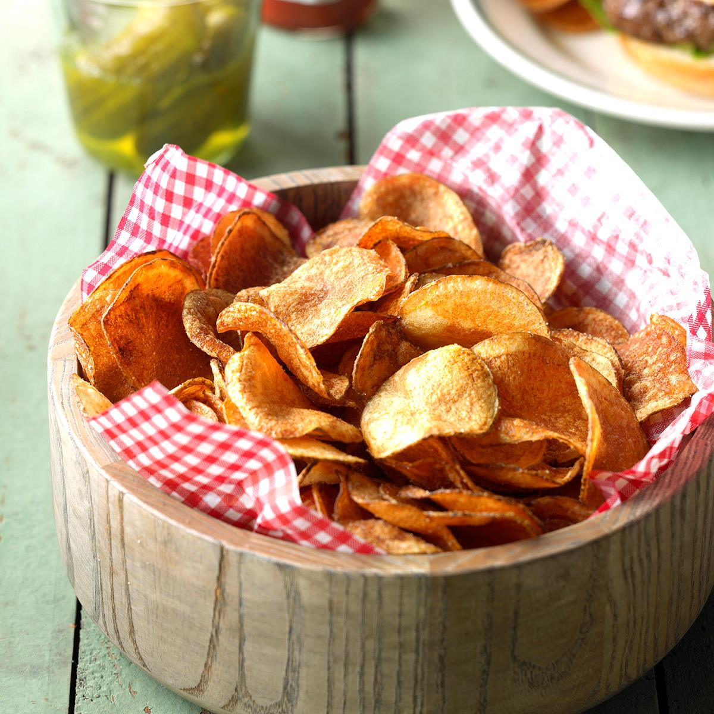

Homestyle Potato Chips

Description
Fun and easy Homstyle potato chips
Ingredients
4 medium potatoes, peeled and sliced paper-thin
3 tablespoons salt, plus more to taste
1 quart oil for deep frying
Steps
- Transfer potato slices to a large bowl of cold water as you slice them
- Drain slices and rinse under cold water. Refill the bowl with water, add 3 tablespoons salt, and put slices back in the bowl. Let potatoes soak in the salty water for at least 30 minutes
- Drain and rinse slices again. Pat dry
- Heat oil in a deep-fryer to 365 degrees F (185 degrees C)
- Working in small batches, fry potato slices until golden. Remove with a slotted spoon and drain on paper towels. Continue until all of the slices are fried
- Season potato chips with additional salt if desired